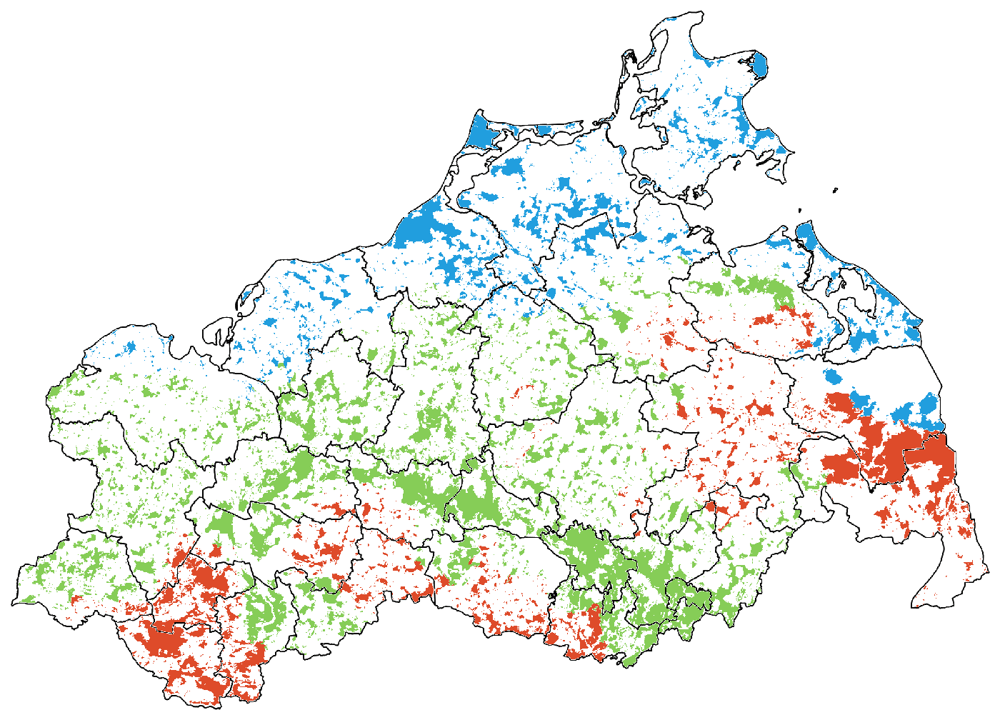

Klimastufe
–Keine Treffer.
Standort
–Keine Treffer.
BZT
–Keine Treffer.
Baumart
–sortiert nach Maximalanteil
Keine Treffer.

Digitale Baumarten-Standort-Klima Anwendung
wird geladen …
In die Karte klicken. Gefärbt sind nur die Waldflächen – klicken Sie in oder dicht neben den Wald, der Sie interessiert.

Die Karte fehlt.
assets/klimastufe/karte.png wird von
python3 tools/extract_images.py erzeugt.
Solange sie fehlt, bitte die Klimastufe unten direkt wählen.
Noch nichts ausgewählt.
Oder die Klimastufe direkt wählen:
Karte: Klimastufen nach BAS Standorts-Karte 2023 · PDF öffnen ↗
Grün hinterlegt sind die Baumarten, die in mindestens einem der möglichen Zieltypen die führende Baumart sind. Das ist unabhängig vom Anteil: Zwei Baumarten können denselben Höchstanteil haben und trotzdem verschieden weit vorn im Zieltyp stehen.
Diese Baumarten kommen auf dem Standort zwar vor, lassen sich aber mit der gewählten Mischung in keinem Bestockungszieltyp zusammenbringen.
Angegeben ist der höchste Anteil, mit dem die Baumart auf diesem Standort in einem Bestockungszieltyp vorkommen darf – bei einer gewählten Mischung nur noch in den Zieltypen, die alle gewählten Arten zugleich zulassen. Die Anteile sind Obergrenzen und addieren sich nicht zu 100 %. Die einzelnen Zieltypen und ihre Spannen stehen im BZT-Erlass.
Keine Treffer.
Keine Treffer.
Keine Treffer.
sortiert nach Maximalanteil
Keine Treffer.
Für diese Seite liegt kein Bild unter assets/seiten/.
Bitte python3 tools/extract_images.py ausführen oder das
PDF über den Link unten öffnen.